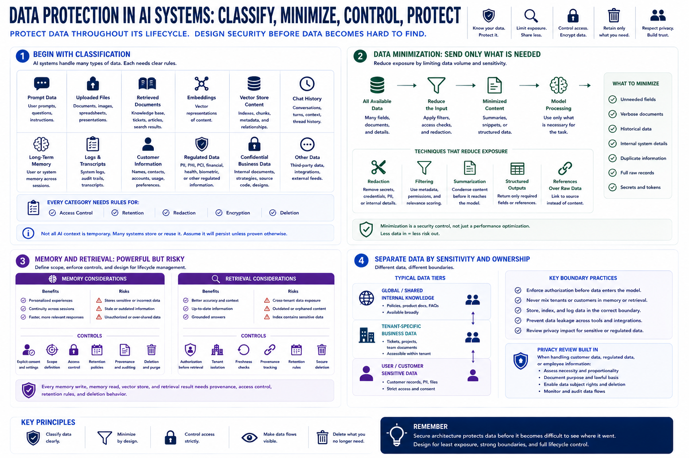

Data Protection, Privacy, and Memory Controls
Connecting to LMS... Progress: in progress

Narration
Data protection begins with classification. AI systems may handle prompt data, uploaded files, retrieved documents, embeddings, vector store content, chat history, long-term memory, logs, transcripts, customer information, regulated data, and confidential business material. Each category needs rules for access, retention, redaction, encryption, and deletion. Treating all AI context as temporary text is a mistake because many systems store or reuse that context.
Data minimization is a practical architecture control. The system should send only the data needed for the task, not every available field or document. Summaries, filtered snippets, structured outputs, or references may reduce exposure compared with full raw records. Redaction can remove secrets, credentials, personal data, or unnecessary internal details before content enters a model or log pipeline.
Memory and retrieval require clear scope. Long-term memory can improve user experience, but it can also store sensitive, incorrect, stale, or unauthorized information. Retrieval systems can improve answer quality, but they can expose documents across tenants or preserve outdated content in indexes. Memory writes, memory reads, vector stores, and retrieval results need provenance, access control, retention rules, and deletion behavior.
Internal knowledge should be separated from user-specific or tenant-specific data. A general policy document may be available broadly, while a customer record, private ticket, or uploaded file should follow stricter boundaries. Privacy review should be built into the design when customer data, regulated data, or employee information is involved. Secure architecture protects data before it becomes difficult to see where the data went.